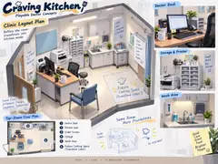
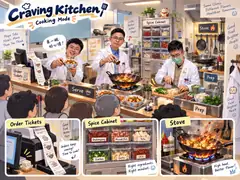

Corrected production concept art · canonical source of truth
Craving Kitchen
2026-09-17 美術修正版。以下五張 WebP 是目前 CK 唯一正式視覺 source of truth；先前錯誤的小型 JPEG 與 legacy SVG 不再具有美術決策權。
v0.4.1 · CORRECTED ART ONLINE




核心美術規則： Same Clinic, Different Flavors。正式 runtime、gallery、文件與後續 AGENT 都必須直接引用
assets/art_direction/source_of_truth/*.webp。Legacy SVG 僅可作程式 fallback，不可再被描述成 production-final 美術。